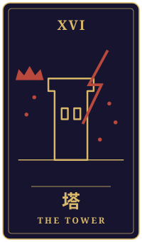

同じ寒さ
物語の手前に、ひとつの相談がありました。三枚のタロットをめぐるやりとりを、聞こえたままに書き留めています。
持ち込まれた相談
イギリスの北の港町に、夫と三十年暮らしてきました。夫が亡くなって三年、古い家に一人です。光熱費が上がって、今年は暖房をつけるたびに計算してしまいます。日本の妹からは「そんな寒いところで一人で年を取らないで、帰ってきなさい」と言われます。正直、心が揺れています。でも日本に帰っても、私の居場所があるのかわかりません。こちらには、週三日のお店の仕事と、土曜の合唱と、夫が植えたバラがあります。ただ、それだけで残る理由になるのか、意地を張っているだけなのか、自分でもわからないのです。この冬をここで越すべきか、迷っています。
タロットの読み解き

過去
正義・逆位置
夫と三十年を過ごされた古い家で、今は一人の時間が流れているのですね。正義の逆位置は、天秤が傾いたままになっている姿です。ここでは、物事の釣り合いがうまく取れず、どちらを選ぶべきか決めかねている心の揺れとして現れているのかもしれません。

現在
塔・正位置
今の時期は、塔の正位置が示すように、それまで支えてきた暮らしの形が大きく揺さぶられているように見えます。光熱費の計算や、妹さんからの言葉が、積み重なった日々の土台に響いているのでしょう。ただ、塔が崩れるのは、古い枠組みが新しい形へ組み直される合図でもあります。揺れること自体は、あなたが自分の暮らしを真剣に見つめ直している証なのだと思います。

未来
太陽・正位置
太陽の正位置は、明るさや温かさ、満ちたりた実りを表します。この冬をどこで越すかを決めたとき、その選択が思いがけず心を明るく照らしてくれる可能性もあるでしょう。ただし、カードが示すのは一つの流れであり、結末を約束するものではありません。
最後に
イギリスに残ることが意地なのか、それとも居場所なのか。その答えは、週三日のお店で交わす言葉や、土曜の合唱で声を合わせる時間、夫の植えたバラを前にしたときの心の温もりの中に、すでに少しずつ表れているように感じます。逆に、日本に戻ったときに心がほっとする場面を思い描いてみるのもよいでしょう。どちらを選んでも、それはあなたが三十年の歳月を生き抜いてきた誇りの延長です。光熱費や住まいのことなど、お金と暮らしに関わる具体的な判断は、現地の専門家や信頼できる方にも相談しながら、ゆっくり進めてくださいね。
帰り際の問い素直に喜べるものを、まっすぐ受け取っているか。
読み解きは、タロット占い「月夜のアルカナ」が、この相談と引かれた三枚から返したものです。小説は同じ三枚を、別の角度から描いています。相談者は物語のための架空の人物です。相談文・読み解き・短編本文は、いずれも生成AIを使って制作しています。
物語に戻る